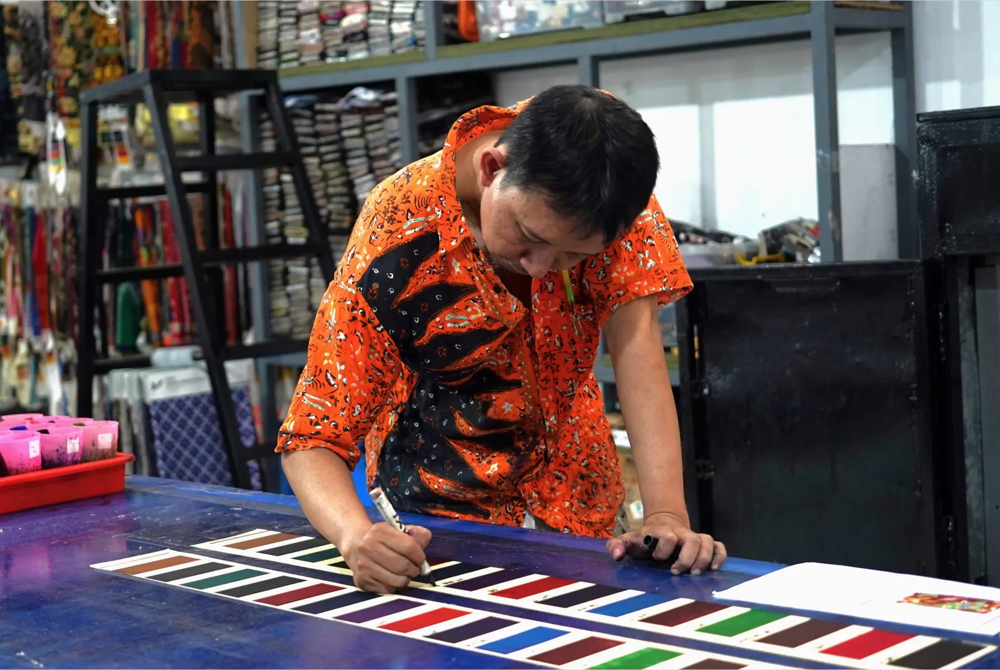

Pentingnya Cetak Sampel Kain Printing Sebelum Produksi
Sebelum memproduksi kain dalam jumlah besar, penting untuk memastikan desain sesuai dengan hasil yang diharapkan. Salah satu caranya adalah melalui cetak sampel kain printing, yaitu tahap untuk melihat secara langsung bagaimana warna dan motif diterapkan pada material kain.
Sebab, warna yang terlihat di layar belum tentu sama dengan hasil cetak pada kain. Karena itu, pemeriksaan sampel membantu memastikan desain lebih sesuai sebelum produksi dimulai.
Mengapa Cetak Sampel Kain Penting?
Cetak sampel memberikan kesempatan untuk mengevaluasi beberapa aspek desain sebelum masuk ke tahap produksi massal.
1. Memeriksa Kesesuaian Warna
Warna pada layar dapat berbeda dengan hasil cetak karena pengaturan monitor, karakteristik kain, dan proses pencetakan. Melalui sampel, warna dapat diperiksa dan dibandingkan dengan desain yang direncanakan.
2. Memastikan Detail Motif
Sampel membantu melihat apakah komposisi pola dan detail desain sudah sesuai ketika diterapkan pada kain, baik untuk motif batik maupun desain kain fashion modern.
3. Menilai Ketajaman Hasil Cetak
Kejelasan motif juga perlu diperhatikan. Dengan melihat sampel secara langsung, pelanggan dapat menilai detail hasil cetak dan mendiskusikan penyesuaian jika diperlukan.
Mengurangi Risiko Sebelum Produksi Massal
Produksi kain dalam jumlah besar membutuhkan perencanaan yang matang. Jika ketidaksesuaian baru ditemukan setelah produksi berjalan, proses perbaikan dapat menjadi lebih sulit dan berpotensi menambah biaya.
Dengan mengevaluasi sampel terlebih dahulu, revisi desain dapat dilakukan lebih awal. Meski tidak menjamin seluruh hasil produksi identik dengan sampel, tahap ini membantu mengurangi risiko dan membuat proses produksi lebih terarah.
Cetak Sampel Kain Bersama PT Kusuma Kencana Mulya
PT Kusuma Kencana Mulya mendukung kebutuhan produksi kain printing dengan memperhatikan kesesuaian desain, warna, dan detail motif. Pemeriksaan sampel dapat menjadi langkah awal untuk mengevaluasi hasil cetak sebelum produksi dilanjutkan.
Punya desain kain yang ingin dicetak? Hubungi PT Kusuma Kencana Mulya untuk berkonsultasi mengenai sampel dan kebutuhan produksi kain printing Anda.